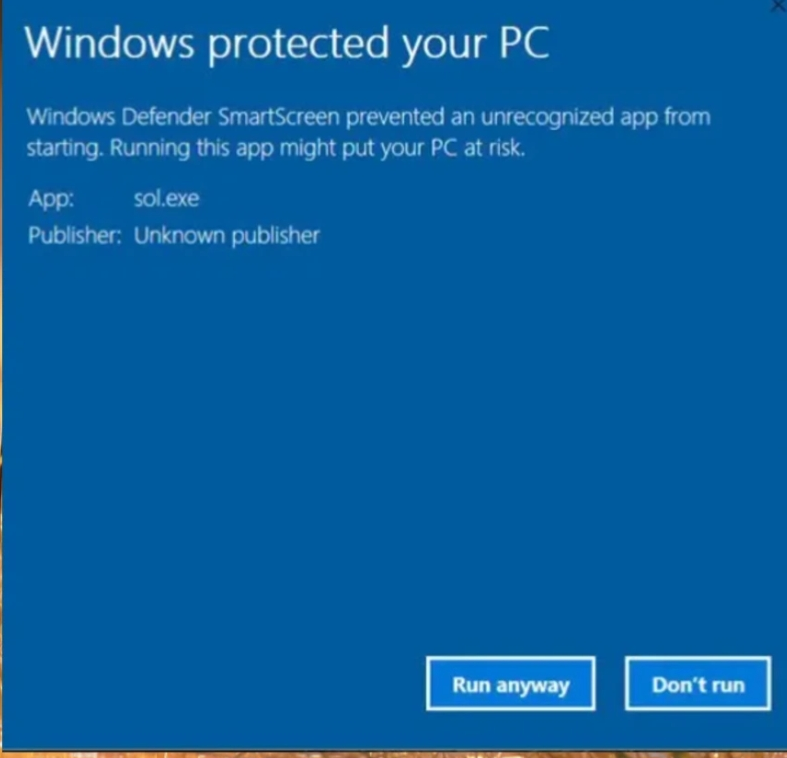

Ringzauber is a private browser made with Python that does not save your history. It is easy to use by anyone and available for Windows 7, 8.1, 10 and 11.

Best used with SearXNG (note: we did not create this). Download SearXNG in your terminal. Instructions here.
About Ringzauber
Ringzauber is a private and simple browser committed to making your web experience easier. It’s as homemade as your first batch of cookies and continuously updated.
What's New in Ringzauber 1.5
To celebrate the release of SWC version 1.00, we present Ringzauber 1.5! This version features Praterich Plus, an AI that acts like a Chrome Extension and helps perform tasks for you. Read more in our blog.
⚠️ Warning
Windows may display Ringzauber as malicious. Please read our Privacy Policy.
Watch this video about how to download Ringzauber. This is important (Speaker may be needed):
How to Download Ringzauber 1.5 by Stenoip MediaDownload Now!
Ringzauber Browser version 1.5 BesserRingzauber Browser 1.5 Beta Ringzauber Browser Penguin (for Chromebooks) Ringzauber Browser version 1.4
⚠️ Note: Some common browser features like camera access and full screen may not work. Ringzauber is currently in its beta phase.